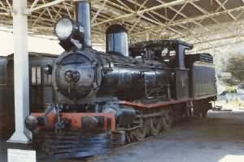 C1 Loco at Zeehan Museum |
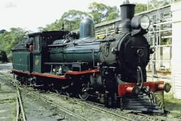 CCS23 in steam at Don River |
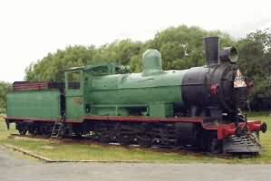 E1 in Meander Park at Deloraine |
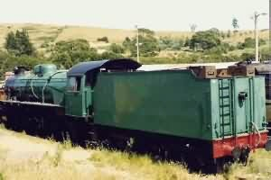 H7 Freight Loco at Don River |
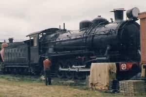 Q5 Freight Loco at Glenorchy |
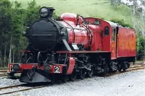 Ma2 Express Passenger Loco |
| Class | Wheel | Builder | Built | Numbers | Line | Notes |
| A | 4-4-0T | R.Stephenson | 1868-1870 | 4 | West | Roundtop |
| A | 2-4-0 | Sharp Stewart | 1873 | 1 | West | Narrow G Al |
| A+ | 4-4-0T | Hunslet | 1878 | 1 | TML | To tender |
| B+ | 4-4-0 | Hunslet | 1884 | 3 | TML | |
| C+ | 4-6-0 | Dubs | 1889-1890 | 4 | TML | |
| D+ | 4-4-2T | Dubs | 1886-1887 | 2 | TML | |
| E+ | 4-4-0 | Hunslet | 1873-1875 | 5 | TML | Orig 4-6-OT |
| F | 4-4-0 | Neilson | 1878 | 1 | TML | Orig 0-4-2 |
| A | 4-2-2 | TGR | 1891 | 1 | TGR | ex Brd Gge A5 |
| A | 4-4-0 | Beyer, Peacock | 1892-1902 | 8 | TGR | To Ab class |
| Ab | 4-4-0 | TGR | 1907-1945 | 8 | TGR | Ex A class |
| B | 4-4-0 | Beyer, Peacock | 1885-1890 | 15 | TGR | |
| C | 2-6-0 | Beyer, Peacock | 1885-1937 | 28 | TGR | To CC, CCS |
| CC | 2-6-0 | TGR | 1912-1916 | 6 | TGR | Mod C class |
| CCS | 2-6-0 | TGR | 1924-1928 | 4 | TGR | Mod C class |
| D | 2-4-2T | Beyer, Peacock | 1891-1908 | 5 | TGR | Tank & loco |
| DS | 2-6-4T | NZR, Price | 1939-1944 | 8 | TGR | Ex NZR Wf |
| E | 4-6-0 | Beyer, Peacock | 1907 | 2 | TGR | |
| F | 2-6-0 | James Martin | 1949 | 4 | TGR | Ex CR NFB |
| G | 4-8-2+2-8-4 | VR, SAR, Clyde | 1944-1950 | 14 | TGR | ASG ex QR |
| H | 4-8-2 | Vulcan Foundry | 1951 | 8 | TGR | |
| L | 2-6-2+2-6-2 | Beyer, Garrett | 1912 | 2 | TGR | |
| M | 4-4-2+2-4-4 | Beyer, Garrett | 1912 | 2 | TGR | |
| M | 4-6-2 | Stephenson | 1952 | 10 | TGR | Some to Ma |
| Ma | 4-6-2 | TGR | 1957-1958 | 4 | TGR | ex M class |
| P | 2-6-2T | Clyde | 1921 | 1 | TGR | Ex NSW |
| Q | 4-8-2 | Perry, Clyde | 1922-1945 | 19 | TGR | |
| R | 4-6-2 | Perry | 1923 | 4 | TGR | 2 strmln 1937 |
| T | 4-8-0 | Walkers Bros | 1921 | 6 | TGR | Ex SAR T |
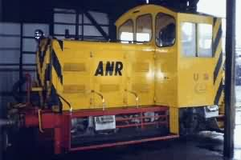 ANR U3 Diesel-Mechanical Shunter |
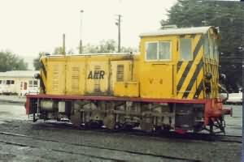 ANR V4 Diesel-Hydraulic Shunter |
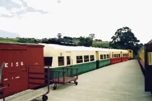 DP2, PT3 Trailer at Don River |
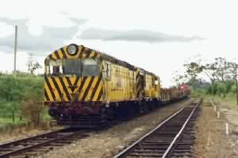 Freight Train on St Marys branch |
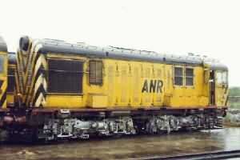 X2 Diesel Loco at Launceston |
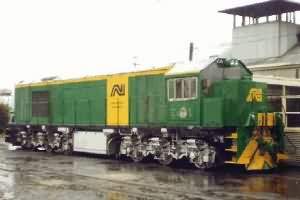 Za1 Diesel Loco at Launceston |
| Class | Wheel | Builder | Built | No's | Line | Notes |
| U | -B- | Moore, TGR | 1958-60 | 6 | TGR | D-Mech ex NG |
| V | -C- | Vulcan, TGR | 1948-68 | 13 | TGR | 1st Tas Dies |
| Va | -C- | Vulcan, TGR | 1962-72 | 3 | TGR | Re-eng V |
| W | -C- | Tulloch | 1959 | 2 | TGR | 1st Aust DH |
| X | Bo-Bo | EE | 1950-52 | 32 | TGR | some to XA |
| Xa | Bo-Bo | TGR | 1961-1970 | 5 | TGR | Mod X class |
| Y | Bo-Bo | TGR, EE | 1961-1971 | 8 | TGR | 1st Tas Dies |
| Z | Co-Co | GEC | 1972-73 | 4 | TGR | 3000HP loco |
| Za | Co-Co | GEC | 1973-1976 | 6 | TGR | Last TGR locos |
| Zb | Co-Co | GEC | 1987-1988 | 16 | ANR | Ex QR |
| Zc | Co-Co | EE | 1988-89 | 33 | ANR | Ex QR |
| 830 | Co-Co | A.E.Goodwin | 1980-86 | 20 | ANR | Ex SAR |
| DP | Bo-Bo | TGR | 30 | TGR | Railcar |
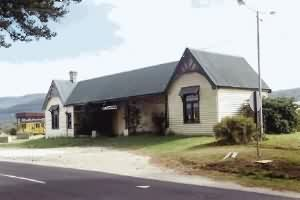 St Marys Station After Closure |
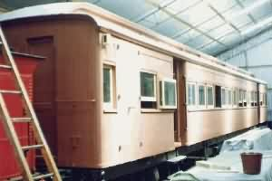 TMLRCo West Coast Carriage |
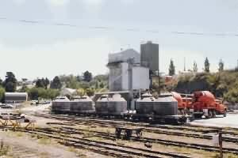 Cement Loader at Hobart |
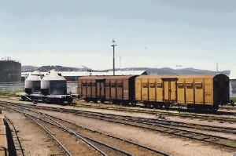 Goods Wagons at Hobart |
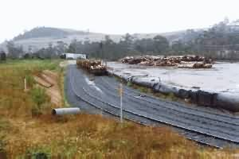 Loading Logs at Avoca |
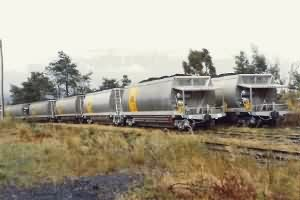 Coal Wagons at Fingal |
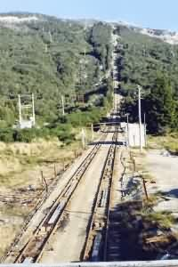 Williamsford Haulage |
| No | Wheel | Builder | Build | Built | Scrap | Notes |
| G1 | 0-4-2T | Sharp Stewart | 4198 | 1896 | 1899 | Explode 16/5/1899 |
| G1B | 0-4-2T | Sharp Stewart | 4619 | 1898 | Nth Richmond | |
| G2 | 0-4-2T | Sharp Stewart | 4432 | 1900 | Nth Richmond | |
| H1 | 0-4-0WT | Krauss | 2180 | 1896 | 1951 | ex TGR |
| H2 | 0-4-0WT | Krauss | 2589 | 1898 | Hillwood, VIC | |
| H3 | 0-4-0WT | Krauss | 2459 | 1899 | 1906 VIC | |
| H4 | 0-4-0WT | Krauss | 4080 | 1899 | Catamrn Coll | |
| J1 | 2-6-4-OT | Hagans | 436 | 1900 | 1949 | unused 1928 |
| K1 | 0-4-0+0-4-0 | Beyer Garrett | 5292 | 1909 | WHR, Wales | |
| K2 | 0-4-0+0-4-0 | Beyer Garrett | 5293 | 1909 | 1932 | Broke Zeehan |
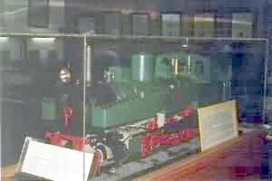 J model in Zeehan Museum |
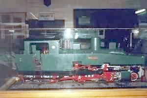 J model in Zeehan Museum |
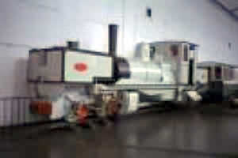 K1 Loco at Welsh Highland |
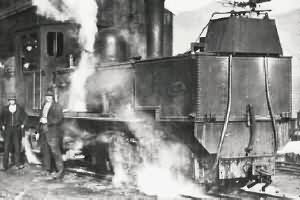 K1 Loco in steam at Zeehan |